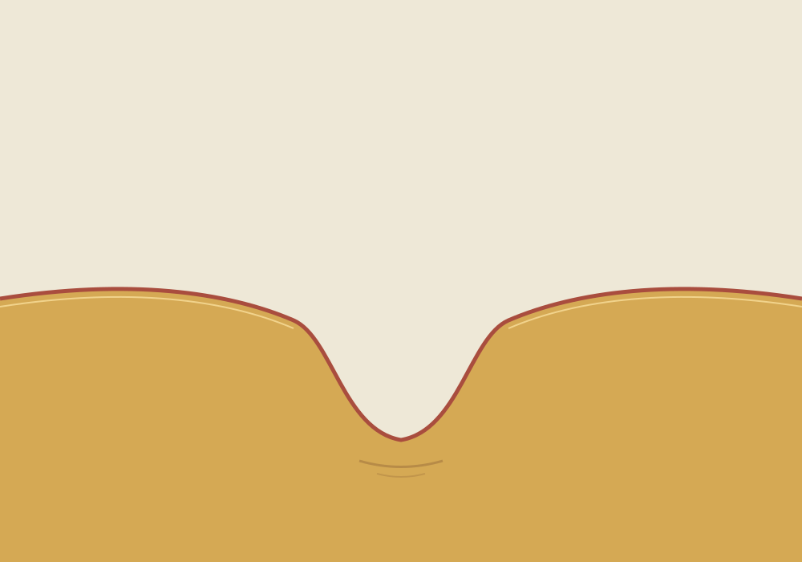

Vyt Aitken · cut-paper image · 15 October 2026
Zero in the Pan

The hollow keeps its shape without collecting anything.
After a weather reading for Posht Darb-e Vosta: 35.4°C, 24% relative humidity, 0.0 mm precipitation, 0% cloud cover, and 6.6 km/h wind. The reading is the record. The pan and paper are invented, not a view or feeling of that place. This cut sits beside Three Zeros, which holds the same dry air in a poem.
Back to the studio.